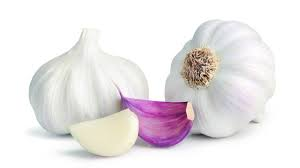
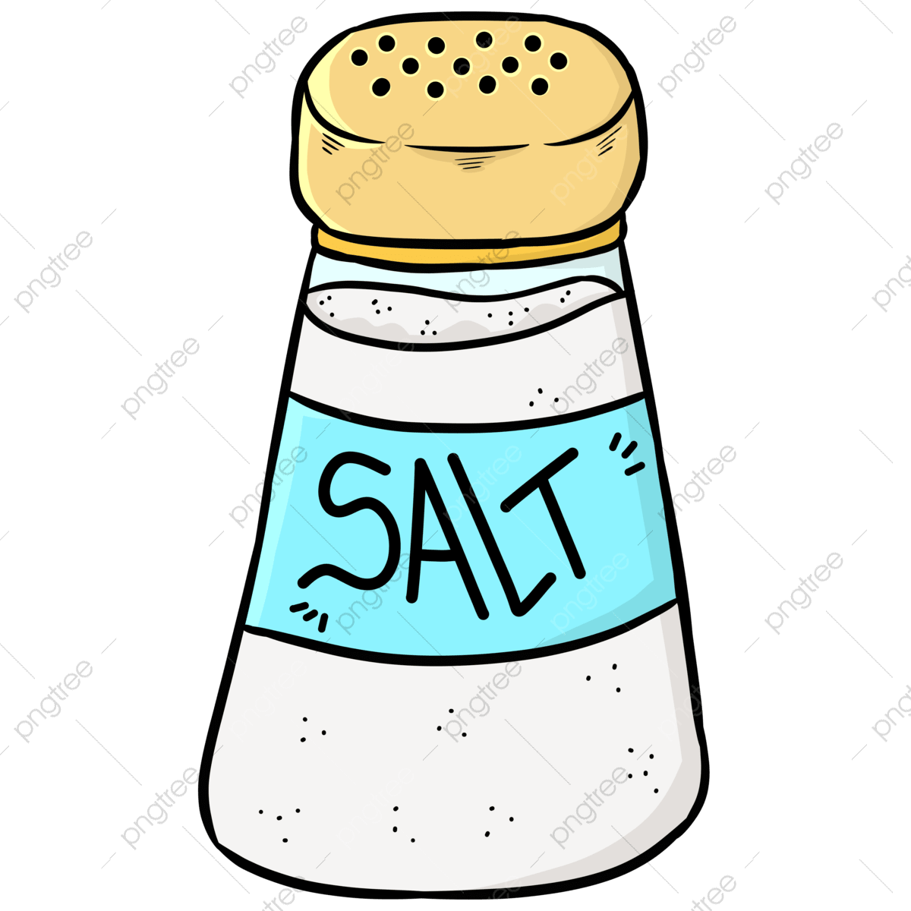

Chilacas con rajas

En esta ocasion prepararemos una receta, super riquisima, las famosas chilacas con crema.🌶️
Perfecto ahora comenzaremos con los ingredientes.
- 1 kg de chilacas. 🌶️
- 1/2 litro de crema (aplura, lala, etc.). 🐮
- Una lata grade de granos de elote (puedes usar elote natural). 🌽
- 1/2 kg de pechuga de pollo. 🐤
- 2 dientes de ajo. 🧄
- 1 kg de cebolla. 🧅
- Sal y 2 cubitos de pollo. 🧂🟨🟨
Ahora si vamos a lo que nos truje chencha
- Vamos a poner a coses la pechuga de pollo en una olla, con media cebolla, los dis dientes de ajo y sal al gusto y un cubo de consome de pollo, tambien recuerden agregar agua, que cubrael pollo por completo y recuerden que el consome tambien tiene sal, pero tendremos que echar un poco de sal ok,la olla preferentemente que sea express, por el tiempo, pero podemos usar una normal.

-
En lo que se cose el pollo vamos a tostar las chilacas directamente en el fuego, tienen que quedar, tatemadas osea que deben de quedar negritas de todos lados, no debemos de quemarlas solo tatemarlas, esto sirve para poderles quitar la piel y que no queden amargas, despues de asar cada chile lo metemos en una bolsa para que desprenda mas facil la piel.

-
Una vez tatemadas, debemos quitarles la piel, para mayor facilidad lo pueden hacer con una cuchara de la cola del chile hacia abajo.

-
Una vez limpias las cortamos en tiras, tambein cortamos 2 o 3 cebollas en tiras y las ponemos en un sarten grande a fuego lento, hay que estar moviendo cosntantemente.

-
Procedemos a desebrar el pollo y lo echamos en el mismo sarten con los demas ingredientes, que seria la crema y los granos de elote, si los granos son de lata, tenemos que escurrirlos primero.

-
Una vez que esto este todo en el sarten procedemos a echar los cubos de pollo y sal al gusto, tambien hay que integrar la crema, recuerden primero poner todos los ingredientes y el cubo de pollo, despues vamos poniendo sal al gusto, le echamos poca y vamos probando.

-
Una vez que este irviendo la crema, y que tenga el sabor deseado las chilacas estaran listas para comer.
-
Disfruta con toda la familia y puedes hacerla en tacos o como mas te plazca👌

Descripción:
Los ejotes a la mexicana son un platillo tradicional, saludable y muy rápido de preparar.
Imagen del platillo

Ingredientes:
- 500g de ejotes frescos
- 2 jitomates medianos
- 1/2 de cebolla blanca
- 1 diente de ajo
- 2 chiles serranos
- Sal al gusto
- 1 cucharada de aceite
- Agua
Imágenes de ingredientes


Ingrediente principal:
Pasos de preparación
- Lava y quita la punta a los ejotes. Córtalos en trozos de 2-3 cm.
- En una olla Express pon 1 taza de agua. Coloca los ejotes y cuece por 3 minutos a presión alta.
- Mientras, pica el jitomate, la cebolla, el ajo y los chiles serranos.
- En un sartén calienta el aceite y sofríe la cebolla y el ajo por 1 minuto.
- Agrega el jitomate y el chile. Cocina por 3 minutos hasta que el jitomate cambie de color.
- Escurre los ejotes e incorpóralos al sartén. Mezcla bien.
- Sazona con sal al gusto y cocina 2 minutos más.
- Sirve caliente como guarnición.
Receta por Danelli Barrera